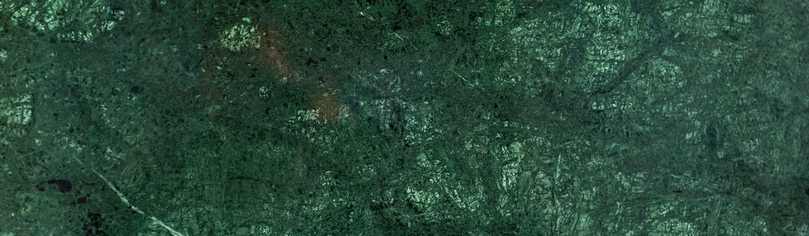
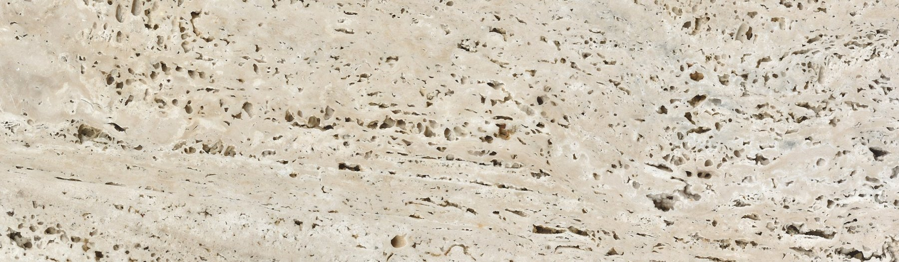
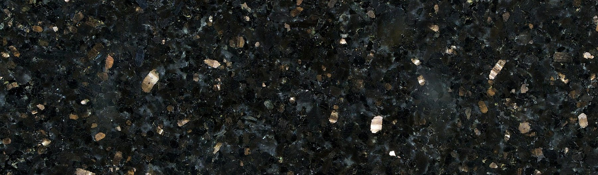

The collection
Fourteen stones in the standard range, from quarries in Egypt and Syria, held in the yard at Koropi. Imported stones on request.
02
Marble & Limestone
Calcareous stones for floors, walls and exteriors. Sold in the trade as marble; classified here by their geology.
03
Granite
Igneous stones for high-traffic floors, countertops and facades. Hard, dense, low absorption.
04
Cladding
Split-face and mountain-face pieces for walls and facades. Irregular by nature; sorted by colour and size before packing.


Imported on request
Global stone selection
Marble, granite, travertine and quartz from quarries in India, Brazil, Italy and Turkey. Three stones are held in the yard: Verde Guatemala, Classic Travertine and Black Galaxy. Minimum order one bundle; lead time 6 to 10 weeks for stones not in stock.


